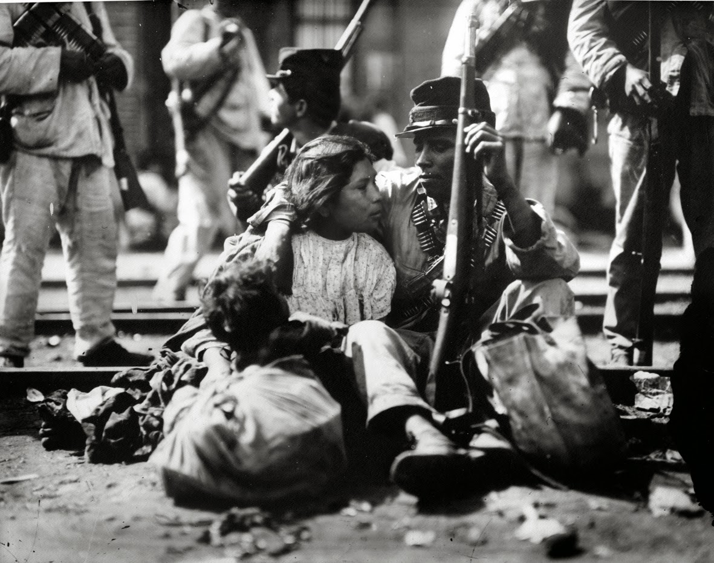

Revolución Mexicana
Introducción
La Revolución mexicana fue un conflicto armado que tuvo lugar en México, dando inicio el 20 de noviembre de 1910. Históricamente, suele ser referido como el acontecimiento político y social más importante del siglo XX en México.
Los antecedentes del conflicto se remontan a la situación de México bajo el Porfiriato. Desde 1876 el general oaxaqueño Porfirio Díaz ejerció el poder en el país de manera dictatorial. La situación se prolongó por 34 años, durante los cuales México experimentó un notable crecimiento económico y estabilidad política. Estos logros se realizaron con altos costos económicos y sociales, que pagaron los estratos menos favorecidos de la sociedad y la oposición política al régimen de Díaz. Durante la primera década del siglo XX estallaron varias crisis en diversas esferas de la vida nacional, que reflejaban el creciente descontento de algunos sectores con el Porfiriato.
Los antecedentes del conflicto se remontan a la situación de México bajo el Porfiriato. Desde 1876 el general oaxaqueño Porfirio Díaz ejerció el poder en el país de manera dictatorial. La situación se prolongó por 34 años, durante los cuales México experimentó un notable crecimiento económico y estabilidad política. Estos logros se realizaron con altos costos económicos y sociales, que pagaron los estratos menos favorecidos de la sociedad y la oposición política al régimen de Díaz. Durante la primera década del siglo XX estallaron varias crisis en diversas esferas de la vida nacional, que reflejaban el creciente descontento de algunos sectores con el Porfiriato.

